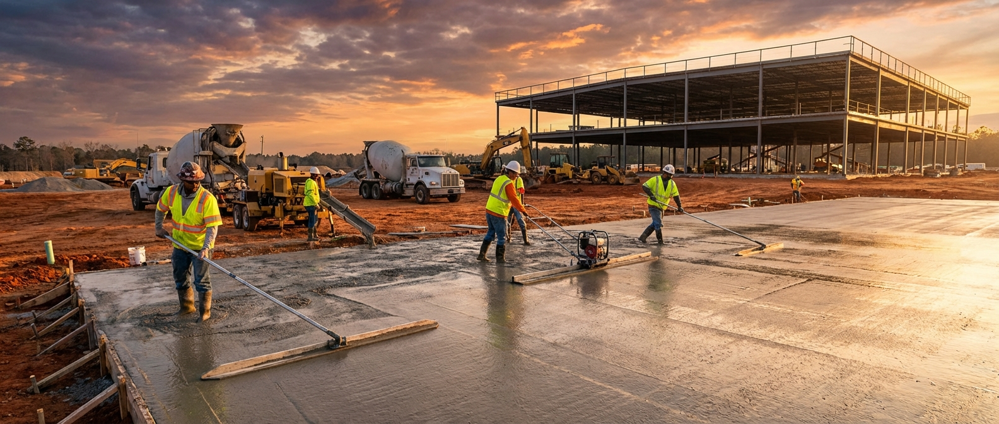

Concrete Slab Solutions
Form, place, and finish for all warehouse, structural, and support applications.

Slab-on-Grade
Warehouse floors, retail buildouts, restaurant kitchens, and light industrial. Full scopes: subgrade prep, vapor barrier, reinforcement, pour, finish, joint sawing, and curing. 4,000–5,000 PSI standard.

Structural Slabs
Elevated slabs, slab decks over occupied space, and parking-deck-adjacent structural pours. Coordinated tightly with structural engineers and GCs to hit critical structural load demands.

Equipment Pads
Rooftop HVAC pads, generator pads, transformer pads, and dumpster pads. Reinforced to load spec, leveled to equipment manufacturers' tight tolerances.

Slab Repair & Replacement
Demolition and replacement for settled, cracked, or improperly draining slabs. We tear out, evaluate subgrade failure reasons, repair base compaction, and re-pour to spec.